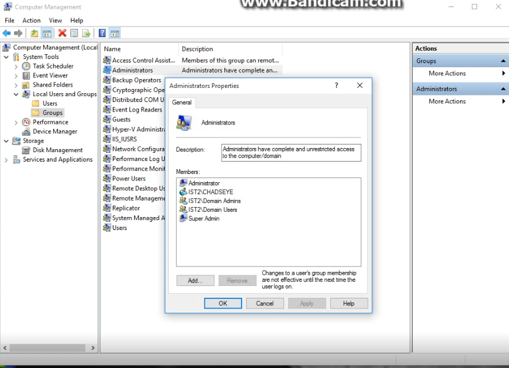

How to create a System Image Backup on Windows 10

I used Adobe Photoshop to take a old picture, touch it up, and colorize it.
How to restore a System Image on Windows 10

I used Adobe Photoshop to take a old picture, touch it up, and colorize it.
Setting up an Administrator account on Windows 10.

I used Adobe Photoshop to take a old picture, touch it up, and colorize it.